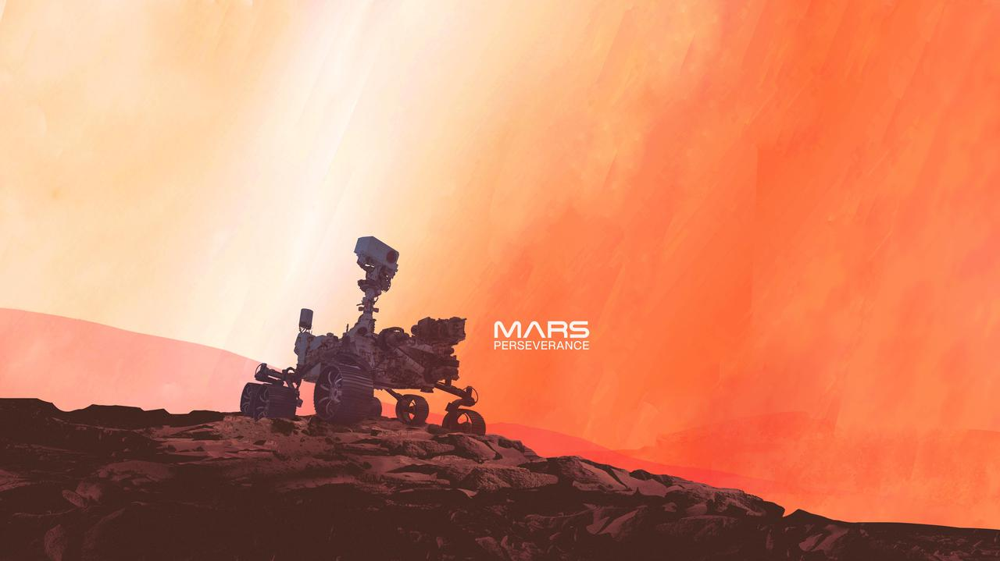

Perseverance
Launched in 2020, Perseverance is NASA’s most advanced rover, built to search for ancient microbial life and collect samples for future return to Earth.
Robotic Explorers on the Red Planet
Since the 1990s, NASA has been sending robotic missions to Mars to explore the mysteries of the Red Planet. These rovers have given us incredible views, groundbreaking data, and a better understanding of our neighboring world.
From the historic Sojourner to the high-tech Perseverance rover, these robotic pioneers continue to push the boundaries of science, engineering, and exploration. Join us on a journey through time and technology.
Launched in 2020, Perseverance is NASA’s most advanced rover, built to search for ancient microbial life and collect samples for future return to Earth.
Operating since 2012, Curiosity has been exploring Gale Crater, discovering organic compounds and evidence of a once habitable Mars.